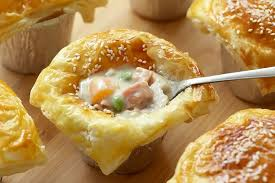
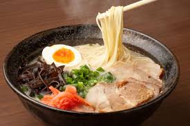
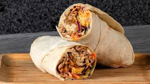

Zuppa Soup
"Indulge in the rich flavors of Italy with our creamy Zuppa soup, a hearty and comforting blend of tender vegetables, savory meats, and aromatic spices. This velvety soup is made with a rich chicken broth, loaded with chunks of juicy chicken, crispy bacon, and sweet caramelized onions. Fresh kale and spinach add a burst of freshness, while a sprinkle of creamy potatoes and a hint of nutmeg provide depth and warmth.
Ramen
Indulge in the rich, savory flavors of Japan's national dish, Ramen. This beloved noodle soup is a harmonious blend of tender, springy noodles, slow-cooked meats, and a rich, velvety broth that will warm your heart and soul.
Shwarma
Shawarma is a popular Middle Eastern dish that originated in the Levant region of the Arab world during the Ottoman Empire. It is made from marinated meat, typically lamb, beef, chicken, or turkey, which is slow-cooked on a vertical spit. The cooked meat is then thinly sliced and served in a pita bread with various toppings such as tahini sauce, tabbouleh, pickles, and vegetables